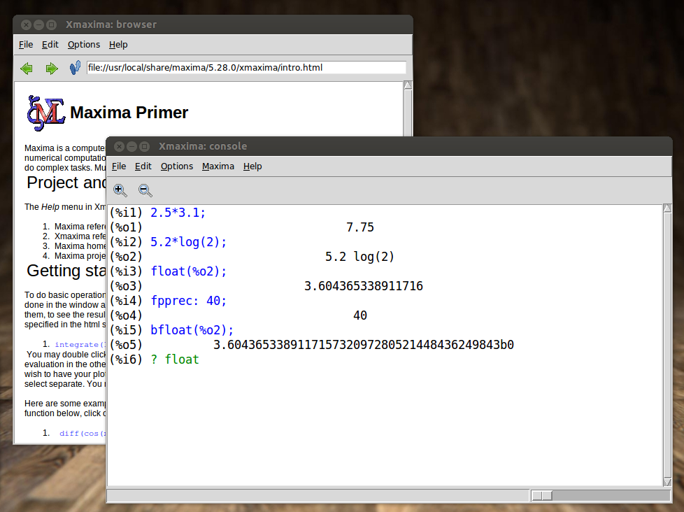
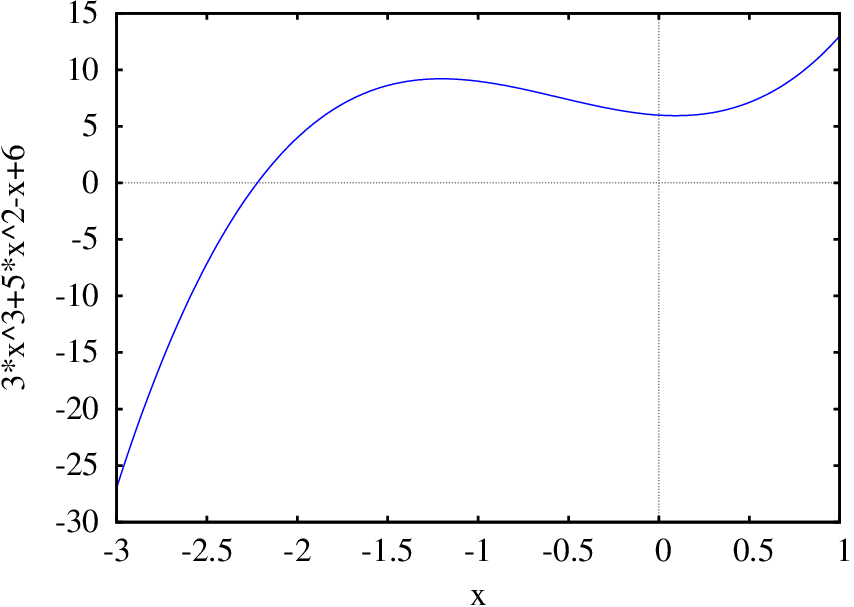
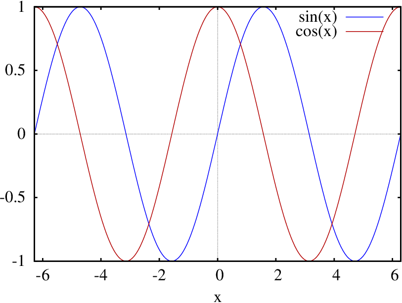
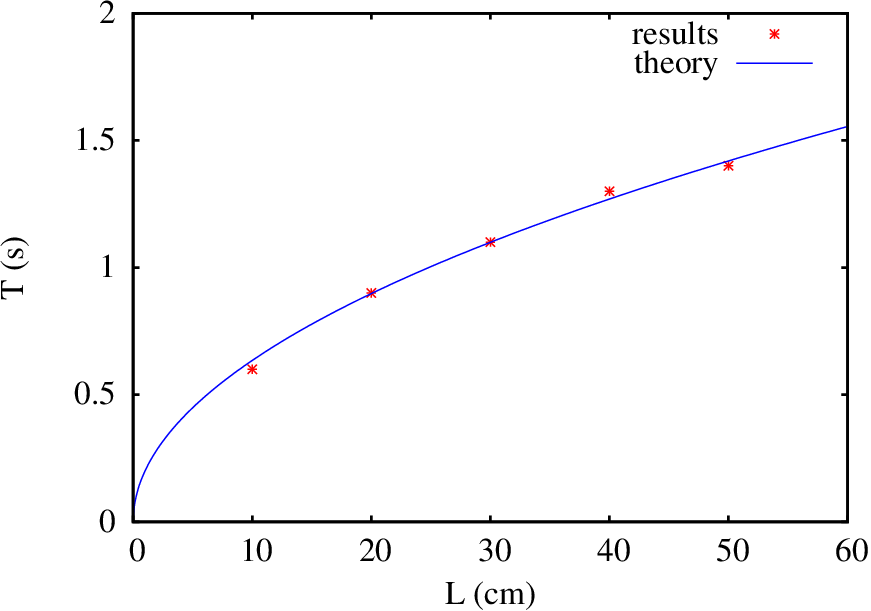

Maxima is a free software package.
It can be freely downloaded for various different systems and
there is extensive documentation that can also be freely
copied. Maxima's website is at
http://maxima.sourceforge.net
Maxima is one of the oldest
Computer Algebra Systems (CAS). It was created by MIT's MAC
group in the 1960s and it was initially
called Macsyma
(project MAC's SYmbolic
MAnipulator). Macsyma was
originally developed for the DEC-PDP-10 large-scale computers
that were used in various academic institutions at that
time.
In the 1980s, its code was ported to several new platforms
and one of those derived versions was
called Maxima. In 1982 the MIT
decided to sell Macsyma as
proprietary software and simultaneously Professor William
Schelter of the University of Texas continued to develop the
Maxima version. In the late 1980s
other proprietary CAS systems similar to
Macsyma appeared, such as
Maple and
Mathematica. In 1998, Professor
Schelter obtained authorization from the DOE (Department of
Energy), which held the copyright for the original version
of Macsyma, to distribute the source code
of Maxima as free software. When
Professor Schelter passed away in 2001, a group of volunteers
was formed to continue to develop and
distribute Maxima as free
software.
In the case of CAS software, the advantages of free software
are very important. When a method fails or gives very
complicated answers it is quite useful to have access to the
details of the underlying implementation of the methods
used. On the other hand, as one's research and teaching
becomes dependent on the results of a CAS, it is desirable to
have good documentation of the methods involved and its
implementation and to be assured that there are no legal
barriers forbidding the examination and modification of that
code.
A.2. Xmaxima
There are several different interfaces to work with
Maxima. It can be run from a command shell, or from one of the
graphical interfaces as wxMaxima, imaxima
or Xmaxima. Figure A.1
shows the main window of Xmaxima, which is a graphical
interface originally developed by Professor William
Schelter.

Figure A.1:Xmaxima graphical interface.
Xmaxima establishes a connection with the Maxima program
(using a socket), sends the commands that the user types to
Maxima and shows the results it returns.
Xmaxima usually opens two windows
(Figure A.1). One of them, called
the browser, shows a tutorial and allows the user to
read the manual or other Web pages. The second window is
the console, where Maxima commands should be written
and their output will appear.
In the "Edit" menu
there are options to navigate the list of previous commands
("previous input")
or to copy and paste text; some options in the menus can also
be accessed with the shortcut keys shown next to them.
Different colors are used to distinguish commands that have
already been processed (in blue) from the command that is
being written and has not yet been sent to Maxima (in green);
the results are shown in black (see
Figure A.1). When changing a
command already executed or when starting a new command, care
must be taken that what is being written appears in green or
blue, to ensure that it will be sent to Maxima. Sometimes it
may be necessary to use the options
"Interrupt" or
"Input prompt", in
the "File" menu to
recover the state in which Xmaxima is accepting commands.
It is also possible to move the prompt symbol to some older
entry in the screen (in blue), change it, and press enter to
repeat the same command with the modifications.
A.3. Data input and output
When a Maxima session starts, the tag
(%i1) will appear, which
means input 1. A valid command
should be written next to that tag, ended with a semi-colon
and when the enter key is pressed, that input will be parsed,
simplified, linked to an internal variable
%i1 and its result
will be shown following a tag (%o1), that means
output 1. That result will also be
linked to an internal variable %o1. Another tag (%i2) will appear next, to mark the place
where a second command should be written and so on. The most
basic usage of Maxima is as a calculator, as in the following
examples.
The result (%o2) shows
two important aspects of Maxima. First, the natural logarithm
of 2 was not computed, because its result is an irrational
number which cannot be represented exactly with a finite
number of numerical digits. The second important aspect is
that the symbol * which
is always required when a product is entered and the
parenthesis, which have to be used to specify the argument of
a function, were not included in the output. That happened
because, by default, the output is shown in a mode
called display2d, in
which the output tries to resemble the way mathematical
expressions are usually shown in books. The expression
"5.2 log 2"
most probably will be interpreted correctly by a reader, as
the product of 5.2 times the logarithm of 2; however, if that
same ambiguous expression was given as input to Maxima it
would trigger an error, because Maxima syntax requires an
operator between 5.2 and the logarithm function, and the
argument of the logarithm must be inside parenthesis. In spite
of the form of the output, variable %o2 has been linked to an expression with
correct syntax, so it can be reused in later Maxima commands
without syntax errors.
To look up the documentation of a function or special
variable in the manual, for instance the function
log that
was just used, the describe function is used, which can be
abbreviated with a question mark followed by space and the
name of the function:
(%i3)? log
– Function: log (<x>)
Represents the natural (base e) logarithm of <x>.
Maxima does not have a built-in function for the base 10 logarithm
or other bases. 'log10(x) := log(x) / log(10)' is a useful
definition.
…
A.4. Numbers
Maxima accepts real and complex numbers. Real numbers in
Maxima can be integers, rationals, such as 3/5, or
floating-point numbers, for instance, 2.56 and 25.6e-1, which
is a short notation for
25.6×10−1. Irrational numbers, such
as sqrt
(2)
(square root of 2) or log(2)
(natural logarithm of 2) are left in that form, without being
approximated by floating-point numbers, and later
calculations, such as sqrt(2)^2 or exp(log(2)) will lead to the exact result
2.
Floating-point numbers are "contagious"; namely,
the operations in which they enter will be carried out in that
format. For example, if instead of writing
log
(2)
one would write
log
(2.0),
the logarithm would be computed approximately in
floating-point. Another way to force an expression to be
computed as a floating-point number consists on using the
function
float.
For example, since the result
(%o2) obtained above
was linked to the variable %o2,
to get a floating-point approximation of that result one
would write:
(%i4)float (%o2);
(%o4) 3.604365338911716
The function float
computed the product 5.2 log(2) approximately, using 16
significant digits in floating-point format. The
floating-point format used in Maxima stores each number in 64
binary bits, which leads to between 15 and 17 significant
digits when expressed in decimal base. That format is known
as double precision.
A frequent source of confusion arises from the fact that
those numbers are being represented internally in binary base
and not in decimal base; thus, certain numbers that can be
represented in decimal with a few digits, for instance 0.1,
would need an infinite number of binary digits to be
represented accurately in binary base. It is the same thing
that happens with the fraction 1/3 in decimal base, which in
floating-point form has an infinite number of digits:
0.333… (in the base 3 system that fraction can be
easily represented). The fractions that lead to an infinite
number of digits are not the same in the decimal and binary
base systems. Consider the following results, which are
perfectly correct and would appear in any system that uses
binary digits and double-precision format, but might look
puzzling to someone used to work with the decimal system:
The explanation for this last result is that the number 0.1
cannot be written exactly using 64 binary bits. Thus,
multiplying 0.1 by 2 does not give exactly 0.2, but the
decimal number with 16 significant digits which is closer to
the result obtained is 0.2000000000000000, giving the
impression that the result of the product is exactly that,
when it is not. In the case of 6*0.1, using double precision
format, the closest number with 16 decimal significant digits
is 0.6000000000000001. Some computing systems ignore the last
digits in the results obtained from double-precision
calculations, showing the result as 0.6, but whenever binary
double-precision is used, the result of 6*0.1 will never be
exactly 0.6.
If the number 1/3 had to be represented in decimal system,
using only 3 significant digits, the most approximate
representation of the number would be 333/103,
namely, 0.333. In binary system with double precision 52
significant binary digits are used, which means that the
numerator has to be less than 252 and the
denominator must be a number of the form
. Maxima's
function rationalize
shows the approximate representation being used for a number,
in the form of a fraction. For instance,
(%i7)rationalize (0.1);
(%o7)
the numerator is less than 252 (and bigger than
251), while the denominator is exactly equal to
255. In order for that fraction to represent
exactly 0.1, the denominator should be ten times bigger than
the numerator, namely, it should end in 70 rather than 68, but
the power of 2 closer to that number had to be used.
To avoid the numerical errors inherent to the floating-point
representation, fractions can be used; for example, 1/10
instead of 0.1. There is also another Maxima specific format
which accepts any arbitrary number of significant digits to
represent floating-point numbers. That format is
called big float and it is used by writing
"b", instead of
"e" for the
exponents; for example, 2.56×1020, written as
2.56e20 would be represented internally in double-precision
format, with 16 significant digits and any calculations made
with it would result in other double-precision numbers; but if
the same number is written as 2.56b20, it will be represented
internally in big-float format and
when it makes part of numerical calculations, the result will
be another number in the same format, which can have many
significant digits up to a maximum number determined by the
value of the internal variable fpprec
(floating-point precision).
The function
bfloat
converts a number into big-float
format and the default value
of fpprec is 16. For example, in
order to get a numerical approximation for the
result (%o2), with 60
significant digits, the following commands are used:
The letter b, followed by zero, at the end of the result
(%o9) means that the
number is in the big-float format
and it should be multiplied by a factor of
100 = 1.
In the rest of this appendix and in all the chapters in this
book, all floating-point numerical results will be
automatically rounded to only 4 significant digits. That is
achieved by changing the value of the system
variable fpprintprec from its default value of 0 to 4:
(%i10)fpprintprec: 4;
(%o10) 4
internally, all floating-point numbers will continue to have
16 significant digits and big-float
numbers will have the number of significant digits set by
fpprec; however, whenever a number
has to be printed in the screen, it will be rounded to 4
significant digits. If at any moment one wants to see all the
significant digits stored internally, it will be necessary to
set fpprintprec back to its default
value of 0.
A.5. Variables
To link a value or other objects to a variable, the symbol
":" is used, and not the equal sign
"=", which will be used to define
mathematical equations. The name of the variables can be any
combination of letters, numbers and one of the symbols % or
_, but the first character cannot be a number.
Maxima is case sensitive. Here are
some examples:
variables a, b,
c
and Root1 were linked to the
numerical values 2, −2, −4 and 2, while
variable d was linked to an
expression.
Notice that input (%i11) was ended with a dollar
sign $, rather
than a semi-colon. That will make the command to be executed
without showing its result on the screen. In any case,
variable
%o11 became linked to the result of input
(%i11) and can be referred to
later, even though its value was not shown. Input
(%i12) shows how to link
several variables with a single command. When the name of a
variable is written, as in input
(%i13), the output will
be the value linked to that variable or the name of the
variable itself if it has not been linked to any value. In the
expression given to be linked
to Root1,
variables a,
b and c
were replaced by the values linked to them, and the result was
then simplified and linked to the variable, while
variable d was linked to an
expression that depends on z,
because that variable was not linked to any value.
In order to remove the value linked to a variable, the function
remvalue can be used; in the next example
the value linked to
a is removed and an expression that
depends on a is then
linked to Root1:
To remove all values linked to variables, the command
remvalue
(all) is used. Notice that a variable
can be linked to a numerical value, to an algebraic expression
or to any other Maxima object.
To substitute a variable in an expression by a given value,
the command subst
is used; for instance, to get the expression linked to
Root1 in the case when
a equals 1 and to
approximate the result to a floating-point number, the
following commands are used:
these two last commands did not modify the expression linked to
Root1, which remains
unchanged.
Maxima sets up several internal variables, with names
starting by %. Some
examples are the variables %i2 and
%o2, linked to an input
command and its result. The symbol %
by itself represents the last result obtained; for instance,
in input %i19 it would
have been enough to write down %
instead of %o18.
It is safer not to use variable names that are already being
used by Maxima, even though it is possible to use the same
name for a variable, a function and objects of different
kinds.
A variable can also be linked to a mathematical equation; for
example:
(%i20)secondlaw: F = m*a;
(%o20)
Maxima simplifies most of the input commands before executing
them. In this last example, as the result of that
simplification the variables in the product m*a were reordered
alphabetically. If any of the 3 variables in the equation,
F,
m and a were linked to a value, that value would
have been replaced, and variable secondlaw would be linked to the equation
obtained after that replacement and simplification is done.
In this case, none of the variables were linked to any values;
if later on one of the variables in the equation is linked to
value, the equation linked to secondlaw remains the same, as shown by
the following commands:
(%i21)a: 3;
(%o21) 3 (%i22)secondlaw;
(%o22)
In order to give values to the variables in the equation linked to
secondlaw, the command
subst can be used; for
example,
(%i23)subst([m=2, 'a=5], secondlaw);
(%o23)
Notice that when several variables are replaced by values,
the variables and the values must be place within square
brackets and separated by commas. The single quote
before a was used to
prevent that a were
replaced by the value linked to it; had the single quote not
been used, the expression "a=5" would have become
"3=5" and variable a would not have been replaced
in secondlaw by any
value:
(%i24)subst([m=2, 3=5], secondlaw);
(%o24)
A.6. Lists
A variable can also be linked to a list of values, which are
placed inside square brackets and separated by commas. For
instance, the following command links
variable squares to a
list with the squares of the first 5 positive integer
numbers:
(%i25)squares: [1, 4, 9, 16, 25]$
Many of the operations done by Maxima among numbers can also
be done among lists. For example, to get another list in which
each element is the square root of the corresponding element
in the previous list, multiplied by 3, it is enough to
write:
(%i26)3*sqrt(squares);
(%o26)
The elements in a list are numbered by integer numbers
starting with 1. To refer to an element in the list, the
corresponding index is written within square brackets; for
instance the third element in the list linked
to squares is 9, which can be
extracted this way:
(%i27)squares[3];
(%o27) 9
A very useful function to create lists is
makelist, which expands an expression,
replacing various different values for a given variable. The
first argument given to makelist must be the expression to be
expanded and the second argument is the name of the variable
that will be replaced by a sequence of values from an initial
value and up to a maximum value defined by the third and
fourth arguments. If a fifth argument is given, it will be
used as the increment in the sequence of values that will be
replaced; otherwise, the default increment of 1 will be
used. Two examples of the use of this function are the
following
(%i28)cubes1: makelist ( i^3, i, 1, 5 );
(%o28)
(%i29)cubes2: makelist ( i^3, i, 2, 6, 0.6);
(%o29)
In the first list, the cubes of 1, 2, 3, 4 e 5 were
computed. In the second one, the cubes of 2, 2.6, 3.2, 3.8,
4.4, 5.0 and 5.6 were computed. Notice that the cubes of
floating-point numbers resulted in floating-point numbers,
which were shown with only 4 significant digits due to the
value that was previously given to variable fpprintprec in (%i10), while the cube of the integer
number 2 resulted in another integer number.
The third argument given to function makelist can also be a list with the
sequence of values that should be replaced for the variable in
the second argument. For instance, the following command
creates a list with the cubes of 5, -3.2b0 and
:
(%i30)makelist ( i^3, i, [5, -3.2b0, x^2]);
(%o30)
A.7. Constants
There are some predefined mathematical constants in
Maxima. The variable names linked to those constants usually
start with the % symbol.
Three important constants are the number
, linked to
%pi, Euler's number
, base of the
natural logarithms, linked to
%e and the imaginary number
, linked to %i.
Both %pi and
%e are irrational
numbers which cannot be represented exactly with a finite
number of digits, but a floating-point approximation, with 16
significant digits, can be obtained using function
float; a numerical
representation with more significant digits can also be found
using function
bfloat and variable
fpprec.
The imaginary number %i is used to work with complex
numbers. For instance, the following input command computes
the product between two complex numbers:
(%i31)(3 + %i*4)*(2 + %i*5);
(%o31)
Function
rectform (which stands
for rectangular form) can be used
to get the previous result written in the form of a real part
plus an imaginary part:
(%i32)rectform(%);
(%o32)
A.8. Command files
To save all the commands that have been entered during a work
session in Xmaxima, there is an option
"Save Maxima Input to
File" in the
"File" menu. The file
created with that option can be loaded later on into Maxima,
making all the commands in the file to be executed as if they
had been entered sequentially, by using option
"Batch File" in the
"File" menu. Maxima's
functions
stringout and batch can also be used
to do the same tasks, without using Xmaxima menu
options.
The file created contains simple plain-text, which can be
edited with a text editor. The commands entered will appear
without the tags
(%i1),
(%i2), etc; therefore, care
must be taken with commands that refer to previous results
%o1,
%o2, etc, since the
sequence of numbers assigned to those outputs might be
different. Comments can be included into that file, starting
them with the symbols /*
and ending with */,
which can come several lines below the start of the comment.
The commands entered directly into Maxima or written into that
file can also contain blank spaces between numbers, operators,
variables and other objects, in order to make them more
readable, and each command can also expand several lines.
An efficient way to work with Maxima consists on starting by
writing a text file, called a
"batch" file, with the
commands that are going to be used, which would then be loaded
with the "Batch File"
option. That way, if an error appears making it necessary to
reenter the same commands, it will be enough to correct the
wrong command in the file and to load it again. The commands
in that file should be written without any
tags (%i1),
(%i2),… which will be
assigned automatically when the file is run.
Xmaxima's option "Save Console to
File", in the "Edit"
menu, saves all the information shown in the screen, including
the tags (%i1),
(%o1),
(%i2),
(%o2), etc.
That file can be useful for documenting, but it cannot be reused as
batch file.
Some commands that are used repeatedly in different working
sessions, for instance, the definition a frequently used
function, can be placed inside a file that would then be
loaded using
batch("file"),
where "file" is the complete name and path of the file used.
If the name of the file does not include a path to the
directory where it is located, it will be searched first in
the current directory and then in a directory where Maxima
expects to find user's batch files. The default location of
that directory can be seen examining the contents of the
system variable
maxima_userdir.
A batch file can also be loaded
automatically every time Maxima is started, if it is given the
name maxima-init.mac and it is placed in the
directory where Maxima expects to find user's batch files. For
example, the Maxima sessions shown in the chapters of this
book are run in a system where there is a
file maxima-init.mac in
the directory
"/home/username/.maxima",
with the following contents:
ratprint: false$ fpprintprec: 4$
thus, each time Maxima is started, the system variable
ratprint will get the
logical value false, which will turn off the warnings about
floating-point numbers being automatically replaced by
rational numbers and the system variable
fpprintprec gets the
value 4, which makes floating-point numbers to be shown in the
screen with only 4 significant digits. Any other valid Maxima
commands can be placed into that file, but care must be taken
not to include commands that lead to errors, which could block
Maxima preventing it to start.
A.9. Algebra
Expressions can include mathematical operations with abstract
variables. For example:
(%i33)3*x^2 + 2*cos(t)$
Those expressions can then be manipulated producing new
expressions. Here is an example:
(%i34)%^2 + x^3;
(%o34)
The equal sign is used to define mathematical equations; for
instance:
(%i35)3*x^3 + 5*x^2 = x - 6;
(%o35)
To find the roots of a polynomial function
allroots
can be used; for instance:
(%i36)allroots(%);
(%o36)
,
There are two complex roots and a real one. The three roots
were placed inside a list. To extract, for instance, the
right-hand-side of the third root in the list, the
command rhs (short for
right-hand side) is used:
(%i37)rhs(%[3]);
(%o37) −2.222
Variable x remains undefined, since
the equal sign does not link the variable to the value on the
other side. The results given in (%o36) are numerical approximations and
not the exact roots. In some cases, the exact algebraic
expressions for the roots can be found using the command
solve,
which can also solve other types of equations, not only
polynomials. For example, the roots found above could also
have been obtained with the following commands:
(%i38)solve ( 3*x^3 + 5*x^2 = x - 6, x )$ (%i39)float ( rectform (%));
(%o39)
,
The exact result given by function
solve takes several
lines and it was not shown in the screen; only the
approximation of those roots as floating-point numbers was
shown in this case.
Remember that when a variable name has already been linked to
a value, it will be necessary to type a single quote before
the variable name, to be able to use it as an abstract
algebraic variable. One can also remove the value linked to
that variable using function
remvalue.
To solve a system of equations, which can be linear or
non-linear, the first argument given to
solve must be a list
with the equations and the second argument must be another
list with the names of the variables; the list of equations or
each equation in it can be previously linked to some
variable. For example:
The result was a list within another list, because the first
list encloses the values of the variables and the second list
encloses the various possible solutions to the system, which
in this case was only one. The previous system could have
also been solved with the command
linsolve,
instead of
solve, because the
equations are linear.
Maxima includes many other functions to work with algebraic
expressions. For instance, function
expand
to expand products and powers of expressions.
(%i43)expand ((x + 4*x^2*y + 2*y^2)^3);
(%o43)
Function factor is used to factor expressions. Other
functions used to simplify expressions are ratsimp,
radcan
and xthru. Among
various equivalent expressions, the concept of simplicity is a
relative one and it is more a matter of taste; thus, different
simplifying functions might give different expressions, even
though they should be equivalent. It is convenient to try out
various simplifying functions in each case and then choose a
preferred form of an expression. Also, in some cases, as it
happens with ratsimp,
the results might be different when the same function is
applied again.
Function subst, which
has been used above to substitute numerical values, can also
be used to substitute other expressions. For example, to
substitute
by
, and
by 2 in
output (%o43), one would
write:
(%i44)subst([x=1/z, y=2], %o43);
(%o44)
and to put everything over a common denominator and save the
result into a varaible res one possibility would
be:
(%i45)res: ratsimp(%);
(%o45)
Algebraic expressions are represented internally as lists;
hence, some Maxima functions for lists can also be used with
expressions. For instance, function
length
gives the length of a list and it can also be used to compute
the number of terms in an expression; for instance
(%i46)length(res);
(%o46) 2
Since the expression res was combined into a common
denominator, the two terms accounted for by
length are the
numerator and denominator of the expression; therefore,
function first, which
extracts the first element in a list, will show only the
numerator of the expression linked to res
(%i47)first(res);
(%o47)
and the length of that new expression is:
(%i48)length(%);
(%o48) 7
The 7 elements counted are the seven sub-expressions that are
being added in (%o47). An expression that cannot be
further separated into other sub-expressions, for instance,
, is called an atom; functions that expect a list as
its argument will usually trigger an error when they are given
an atom as the argument. Function atom tells whether the
argument given is an atom or not.
Another function which is very useful to deal with lists is
map,
which will apply a given function to each element in a
list. In the case of a rational expression, it can be used to
apply a function to the numerator and denominator of the
expression. For example, notice the different results obtained
by expanding an expression and expanding its numerator and
denominator separately:
Table A.1 shows the names of the
main trigonometric functions in Maxima. The functions that
expect an angle as their input argument interpret that angle
in radians and not in degrees, since Maxima also knows some
properties of those functions, including their power series,
which are only valid when the angle is given in radians. The
results given by the inverse functions are angles in
radians.
Table A.1: Trigonometric functions
Function
Description
sin(x)
Sin
cos(x)
Cosine
tan(x)
Tangent
sec(x)
Secant
csc(x)
Cosecant
cot(x)
Cotangent
asin(x)
Arc sine
acos(x)
Arc cosine
atan(x)
Arc tangent
atan2(y,x)
Arc tangent
asec(x)
Arc secant
acsc(x)
Arc cosecant
acot(x)
Inverse cotangent
All inverse functions with only one input argument give
angles between 0 and
. For instance:
(%i52)acos(-0.5);
(%o52)
(%i53)acos(-1/2);
(%o53)
Notice that the result was exact when the argument given to
the function was written in exact form, using a rational
number. Function
atan2
takes two input arguments, which are the Cartesian coordinates
and
of a point and returns an angle that can be in any
of the 4 quadrants (between
and
), and corresponds
to the angle between the segment from the origin to that point
and the positive
semi-axis. To convert an angle from
radians to degrees, it is multiplied by 180 and divided by
, as in the following example:
(%i54)180*atan2(-1,-sqrt(3))/%pi;
(%o54) −150
To convert an angle from degrees into radians, it is
multiplied by
and divided by 180. For example, the sine
of 60° is:
(%i55)sin(60*%pi/180);
(%o55)
There are also some functions to simplify trigonometric
expressions. Function trigexpand expands sines and cosines of
sums of angles:
(%i56)trigexpand(sin(u+v)*cos(u)^3);
(%o56)
Function trigreduce tries to convert an expression
into a sum of terms that only have a single trigonometric
function.
(%i57)trigreduce(%);
(%o57)
Function trigsimp applies the trigonometric
identity
and the relations among
trigonometric functions, trying to write the expression using
only sines and cosines. For instance:
The simplest way to represent mathematical functions in
Maxima is by using expressions. For example, to represent
function
, the expression on the
right-hand-side is linked to variable
(%i60)f: 3*x^2 - 5*x;
(%o60)
The derivative of
with respect to
is computed using function
diff
(%i61)diff (f, x);
(%o61)
and the antiderivative with respect to
is obtained with
integrate
(%i62)integrate (f, x);
(%o62)
The value of the function at a point, for instance
,
can be obtained substituting
by 1 using
subst, or with function
at
(%i63)at (f, x=1);
(%o63) −2
Maxima also has its own syntax to define general functions,
which is the subject of the next section, and which can be
used in the case of mathematical functions. For example, the
same function
could have also be defined
as follows:
(%i64)f(x) := 3*x^2 - 5*x;
(%o64)
The value of the function at a point would then be obtained
directly, but to compute the derivative and antiderivative it
is now necessary to write the function and the variable in its
argument:
Notice that the commands in (%i66) and (%67) are really differentiating or
integrating an expression for
and not the Maxima function.
What happened was that when
f(x) is
written and x is not linked to any
value, the Maxima function will give as result an expression
that is then differentiated by
diff or integrated
by integrate. But some
Maxima functions will not give a mathematical expression as
their result; for instance:
(%i68)h(x) := if x < 0 then x/2 else x^2;
(%o68)
The values at different points, such as
, are obtained
without any problem, but functions
diff
and integrate cannot
compute the derivative and antiderivative, because the result
of h(x)
is not a mathematical expression (it includes Maxima specific
commands: if,
then
and else):
(%i69)diff (h(x), x);
(%o69)
Whenever diff doesn't
know how to compute a derivative, as in the previous case, it
will echo the same input that was given, which in this case
was just shown in a different form in the screen, but
internally variable
%o69 became linked to
diff(if x < 0 then x/2 else
x^2,x).
When an expression depends on several variables,
diff
computes the partial derivative:
(%i70)diff (x^2*y-y^3, x);
(%o70)
A definite integral is computed also with function
integrate, giving the
integral limits after the integration variable; for
example:
(%i71)integrate (1/(1 + x^2), x, 0, 1);
(%o71)
A.12. Functions
A Maxima function is a program with some input variables and
an output. Maxima has a simple programming language that is
used to define those functions and it is also possible to use
Lisp, which is the language in which Maxima is written, to
define functions. It is even possible to redefine any of the
functions that have been referred; for instance, if in the
Maxima version being use some function has a bug that has
already been fixed in a more recent version, it is possible to
load the new version of the function and, unless it introduces
conflicts with other older functions, it should work
correctly.
A first example of a function is a
fact to compute the
factorial of an integer number (to get the factorial of a
number in Maxima one just has to type an exclamation sign !
after it, but another version of the same program will be
defined here):
(%i72)fact(n) := if n <= 1 then 1 else n*fact(n-1);
(%o72)
(%i73)fact(6);
(%o73) 720
It is not necessary to use any command to return the output,
since the output of the last command in the function will
become the output of the function. A function can call itself
recursively as it has been done in this example.
Several Maxima commands can be grouped together by typing
them inside parenthesis and separated by commas. Those
commands are run sequentially and the result of the last
command will be the result of the whole group. Each command
can be indented and can expand more than one line. The
following example defines a function that adds all the
arguments given to it:
(%i74)add([v]) := block([s: 0], for i:1 thru length(v) do (s : s + v[i]), s)$ (%i75)add (45,2^3);
(%o75) 53 (%i76)add (3,log(x),5+x);
(%o76)
A list was used as the argument for the function, which makes
the function accept any number of input variables (or none)
and all the input variables will be placed in a list linked to
the local variable
v. Function
block
was used to define another local variable
s, with an initial value of 0,
which by the end of the function will have the sum of the
input variables. The first element given to
block must be a list,
with any number of local variables, each one with or without
an initial value and after that list follows the remaining
part of the function definition. The command
for iterates the local
variable i —in
this case from 1 up to the length of the list
v— with
increments, by default, equal to 1 (option
step can be given to
modify the default value of that increment). When the
iterations are done, the value of the variable is shown to
make it become the output of the function.
When an unknown function is used no errors are triggered;
instead, the unknown function is echoed in the output; for
example:
(%i77)2*4*maximum(3,5,2);
(%o77)
Most of Maxima functions behave the same way when they fail to give
a result. For instance:
(%i78)log(x^2+3+x);
(%o78)
That behavior is very useful, because it makes it possible to
change the value of the arguments later on and to reevaluate
the function. For example, substituting
variable x by the
floating-point number 2.0 in this last result, the logarithm
would then be computed:
(%i79)subst(x=2.0, %);
(%o79) 2.197
A.13. Plots
A.13.1. Functions of one variable
plot2d is used to show the plot of one
or several functions of one variable. For example, the plot
of the polynomial
, for values of
between −3 and 1, is shown by the following
command:
(%i80)plot2d(3*x^3 + 5*x^2 - x + 6, [x, -3, 1]);
the result of command (%o80) (which was not shown here) is the
name of an auxiliary file that was created and then passed
to an external program (Gnuplot)
that will interpret the commands in it and will show the
plot in a separate window
(Figure A.2). Moving the mouse
over the plot, the coordinates of the point where the cursor
is are shown.

Figure A.2: Plot of the polynomial
.
To plot several functions in the same window, those
functions are placed inside a list. For instance:

Figure A.3: Plot of functions sine and cosine.
A.13.2. Creating image files
Since version 5.32, there are three options
pdf_file,
png_file and ps_file that can be
used to save a plot into a file in PDF, PNG or PostScript
format.
For instance, the following command saves the plot produced by
command
(%i80) into a PNG file:
The result shows that two files were created; the first
one, named maxout.gnuplot
contains the Gnuplot commands that will generate the plot
and save the result into the second file name
shown, function1.png. Since no path was given for
the name of the file in the
png_file option,
the file is created in the user directory. File
maxout.gnuplot contains plain
text which can be edited with a text editor and run,
independently of Maxima, using
program gnuplot:
gnuplot /home/username/maxout.gnuplot
The following command saves
Figure A.2 into a PDF file:
It is also possible to create plots with lists of points in
a two-coordinate system. The two coordinates of each point
can be given as a list, inside another list with all the
points. For example, to show the three points (1.1, 5),
(1.9, 7) and (3.2,9) in a plot, the points coordinates can
be placed inside a list linked to
p:
(%i84)p: [[1.1, 5], [1.9, 7], [3.2, 9]]$
To create the plot, it is necessary to give
plot2d a list that
starts with the keyword
discrete, followed by
the list of points. In this case it is not mandatory to
specify an interval of values for the variable in the
horizontal axis:
By default, the points are linked by line segments; to show
only the points, without line segments,
option style should be
used with a value equal to the keyword points.
A.13.4. Points and functions
Several sets of points and several functions can also be
shown in a single plot. In that case, each set of points
should be represented by a list that starts with the
keyword discrete, as
in the previous section, and each function should be
represented by an expression (or function name). All the
lists of points and expressions should also be enclosed
within another list and it will be necessary to specify a
range of values for the independent variable (the one in the
horizontal axis); a range of values for the variable in the
vertical axis is not mandatory, but can be given using
option y.
Example A.1
Plot the experimental results in the following table,
together with the expected theoretical curve:
, where
cm/s2
(cm)
(s)
10
0.6
20
0.9
30
1.1
40
1.3
50
1.4
Solution. The plot of the results and the expected curve is
obtained with the following commands:
Option style in
(%i87) makes the first
object, which is the list of points in the table, to be
represented as isolated points and the second object, which
is the expression for the expected curve, to be represented
by small line segments, which is the default behavior. The
plot is shown in
Figure A.5. Option
y was used in order to
leave some space above for the legend; that option is also
very useful in the case of functions with vertical
asymptotes, to limit the values on the vertical axis thus
preventing the vertical axis to extend up to very large
values.

Figure A.5: Plot of experimental results together
with expected curve.
A.13.5. Functions of two variables
Command plot3d is used to plot functions of
two variables. For example, the following command creates
the plot shown in
Figure A.6:
Moving the mouse over the plot, while its left-side button
is pressed, the surface will be rotated showing how it looks
from different sides. The command plot3d also accepts a list of several
functions to be plotted in the same window. It is also
possible to give a list o 3 functions of 2 parameters, that
define the 3 components of a position vector that describes
a surface (parametric plot).
There are many other options for
plot2d
and plot3d and there
are other graphic functions. Those options and functions are
describe in the section titled "Plotting" of the
Maxima Reference Manual:
http://maxima.sourceforge.net/docs/manual
The most elaborate plot in this book is
Figure 7.13,
which was produced with the following commands:
The function
to be plotted is equal to minus the
antiderivative of the force
, divided by the mass,
0.3. The values of
where
equals zero were
extracted into the list
se, namely, that list
contains the points where
has critical points. The list
p has the coordinates
of those critical points and where
equals 70 and
250. Six horizontal lines
l1…l6
were created using the coordinates of those points and the
three sets of points
rep, max
and min hold the coordinates of
the points where
is equal to 70 or 250, where it has
local maxima and where it has local minima. The plot was
then created showing the function, the horizontal lines and
the three sets of points, using different objects for each
group. Finally option label was used to write down some
information on some places of the plot.
Problems
Plot each of the following functions, using
ranges that will show well the form of the function and its
important features (roots and critical points).
The function
has
two critical points (a local minimum and a local
maximum). Plot the function. Keeping in mind that the local
minimum and maximum are located where the derivative of the
function equals zero, find the
and
coordinates of
those two points.
Find the equation of the circumference that
includes the three points (−2, 7), (−4, 1) and
(4, −5). Hint: the general form of the equation
should be
. To find the three
constants
,
and
, substitute the coordinates of
the 3 points in that general equation and solve the
resulting system of 3 equations.
Define a Maxima function fib(n)
that will compute any number in Fibonacci's sequence,
= {1, 1, 2, 3, 5, 8,…}, defined by the recurrence
relation:
Compute the ratio
for a set of increasing
values of
and check that ratios obtain approach the
limit
. The number
is called the golden mean and
the constant %phi
in Maxima corresponds to that number.
Write a Maxima function
"maximum" that will return the maximum value
from all the arguments given as input.
Answers
2. the local maximum is at (0.709, 4.30) and the local minimum at
(3.29, -4.30).